3 clusterCornerAxes
clusterCornerAxes is used to add corner axis on the left-bottom UMAP/tSNE principle component plot.
3.1 load test data
We load test data in scRNAtoolVis package:
library(scRNAtoolVis)
# load test data
test <- system.file("extdata", "seuratTest.RDS", package = "scRNAtoolVis")
tmp <- readRDS(test)3.2 examples
default plot:
# umap
clusterCornerAxes(object = tmp,reduction = 'umap',
noSplit = T)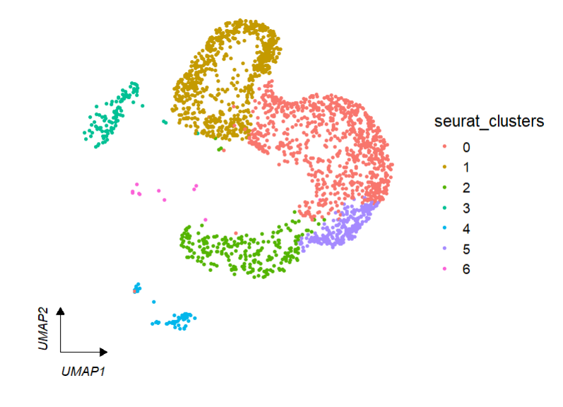
We can change arrow type:
# arrowType
clusterCornerAxes(object = tmp,reduction = 'umap',
noSplit = T,arrowType = 'open')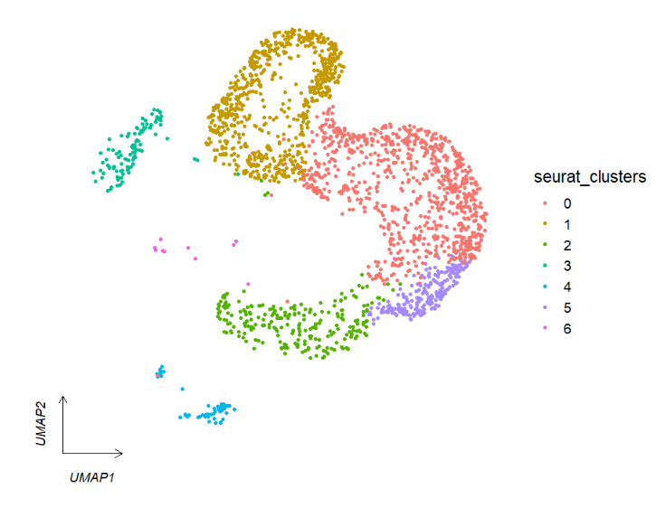
We can facet by seurat metadata column catogary variable:
# facet by metadata column "orig.ident"
clusterCornerAxes(object = tmp,
reduction = 'umap',
noSplit = F,
groupFacet = 'orig.ident',
aspect.ratio = 1,
relLength = 0.5)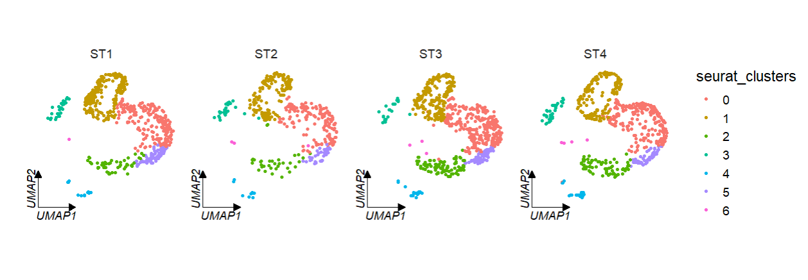
If multiple corner axises will confuse you, you can also set axes = ‘one’ to retain only one axis on the left:
# retain only one axes
clusterCornerAxes(object = tmp,
reduction = 'umap',
noSplit = F,
groupFacet = 'orig.ident',
aspect.ratio = 1,
relLength = 0.5,
axes = 'one')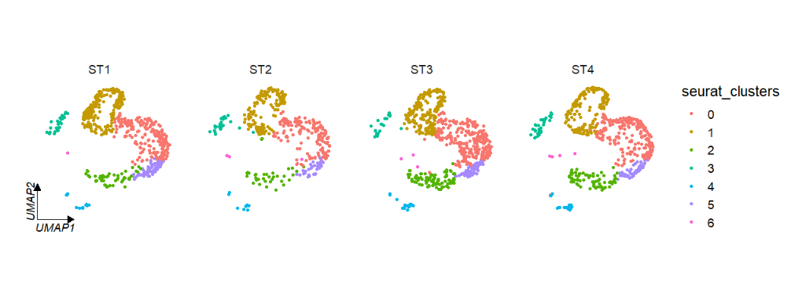
Change the axis and label color:
# line color
clusterCornerAxes(object = tmp,
reduction = 'umap',
noSplit = F,
groupFacet = 'orig.ident',
aspect.ratio = 1,
relLength = 0.5,
lineTextcol = 'grey50')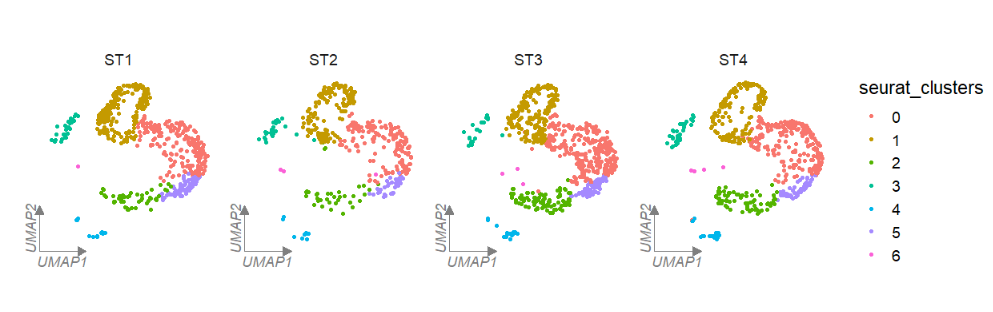
Use tSNE reduction data:
# tsne
clusterCornerAxes(object = tmp,
reduction = 'tsne',
noSplit = F,
groupFacet = 'orig.ident',
aspect.ratio = 1,
relLength = 0.5)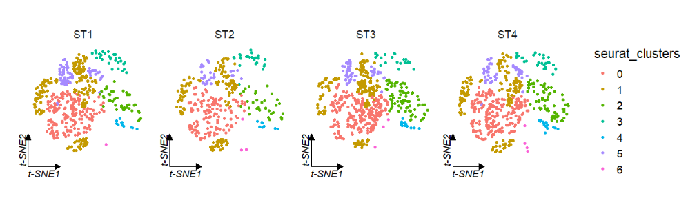
Change a cool theme:
clusterCornerAxes(object = tmp,
reduction = 'umap',
noSplit = F,
groupFacet = 'orig.ident',
aspect.ratio = 1,
relLength = 0.5,
cornerTextSize = 2,
themebg = 'bwCorner')
You can set the keySize to change legend size:
# legend key size
clusterCornerAxes(object = tmp,
reduction = 'umap',
clusterCol = 'cellType',
noSplit = T,
keySize = 8)
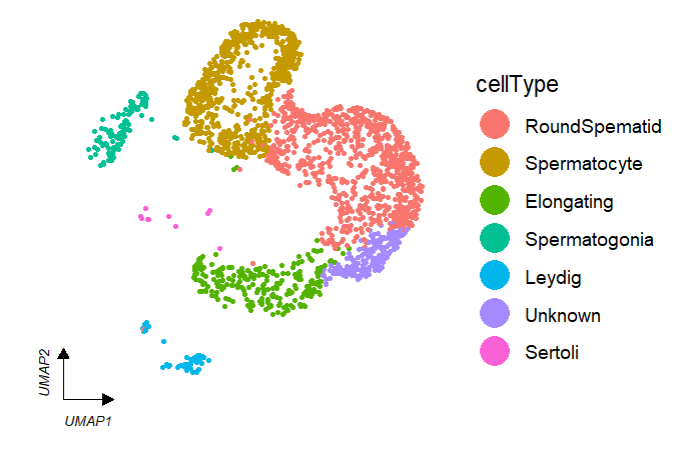
Add cellType names in plot:
# add cell type
clusterCornerAxes(object = tmp,
reduction = 'umap',
clusterCol = "cellType",
noSplit = T,
cellLabel = T,
cellLabelSize = 5)
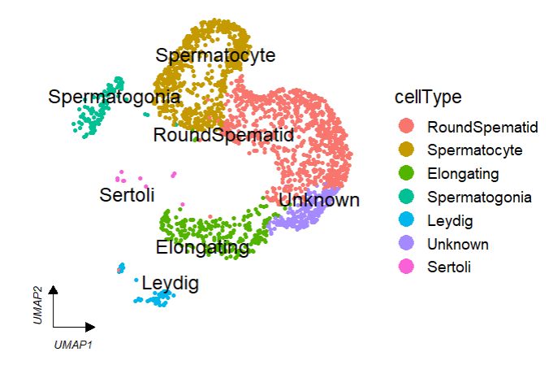
Remove legend:
# remove legend
clusterCornerAxes(object = tmp,
reduction = 'umap',
clusterCol = "cellType",
noSplit = T,
cellLabel = T,
cellLabelSize = 5,
show.legend = F)
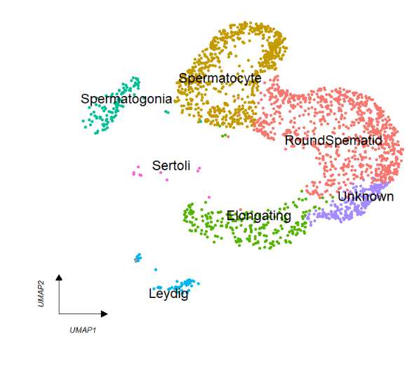
Split by group:
# split
clusterCornerAxes(object = tmp,
reduction = 'umap',
clusterCol = "cellType",
groupFacet = 'orig.ident',
noSplit = F,
cellLabel = T,
cellLabelSize = 3,
show.legend = F,
aspect.ratio = 1,
themebg = 'bwCorner')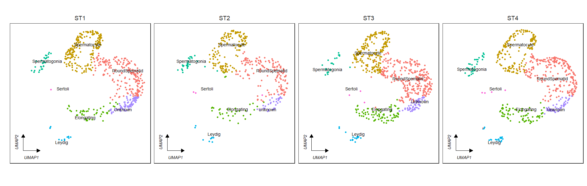
3.3 add circle
You can add circles to each clusters to mark:
# add circle
clusterCornerAxes(object = tmp,reduction = 'umap',
noSplit = T,
cornerTextSize = 3.5,
themebg = 'bwCorner',
addCircle = TRUE,
cicAlpha = 0.2,
nbin = 200)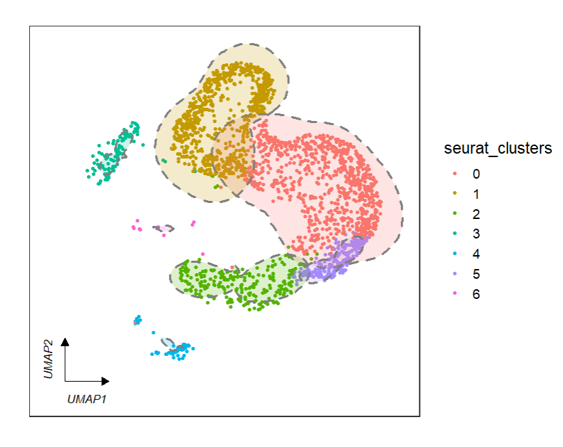
Relative parameters to control the circle as follows:
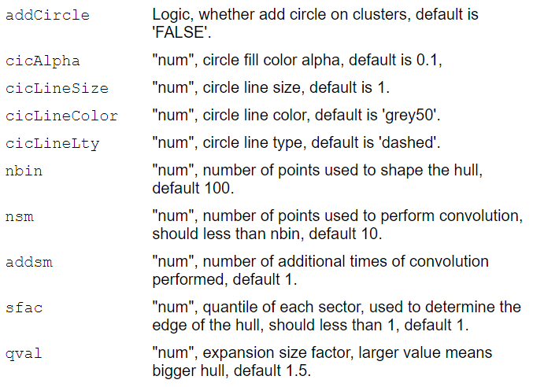